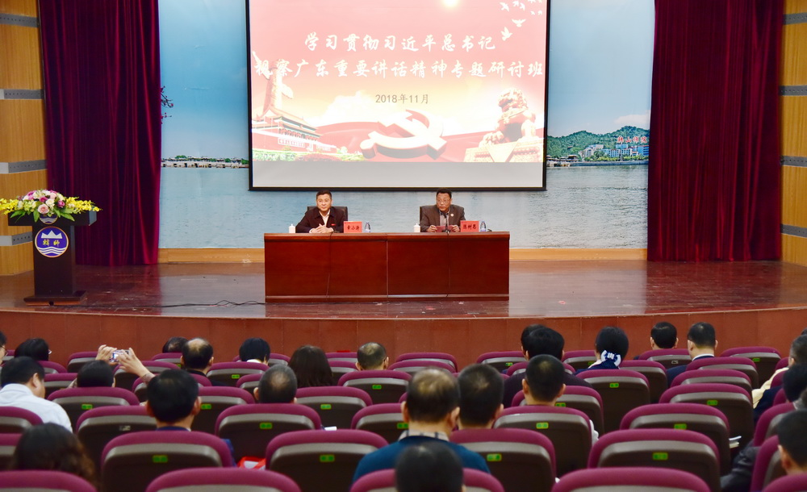
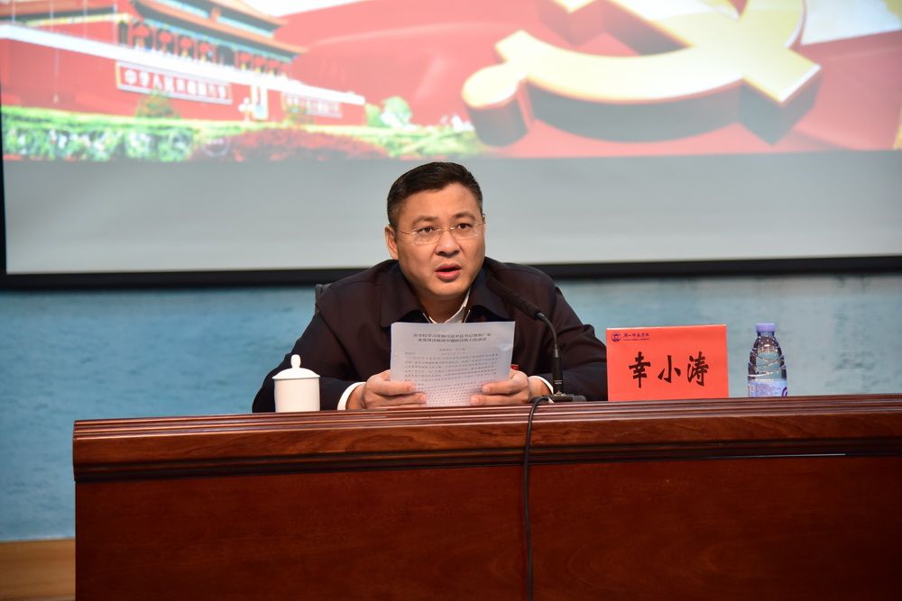
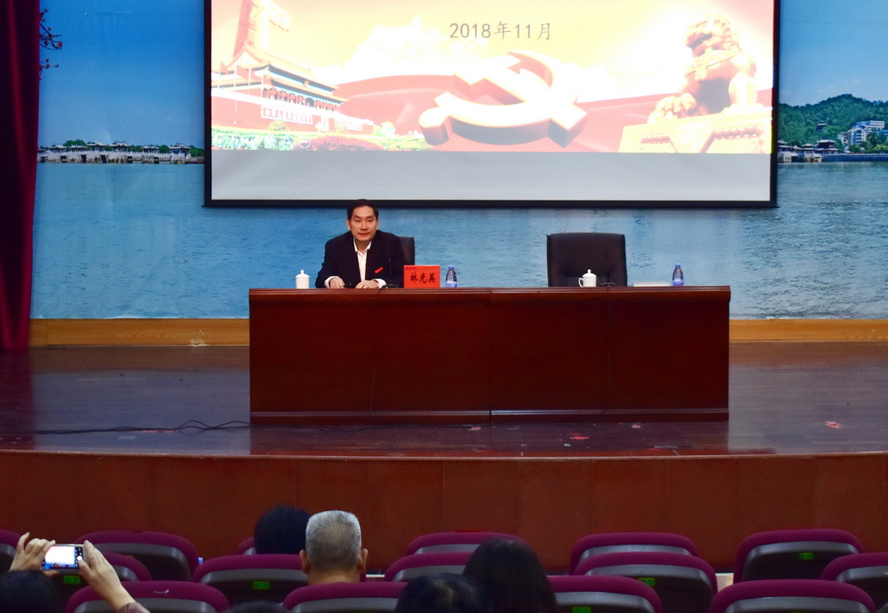
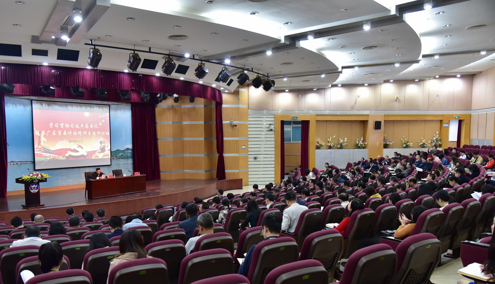

11月20日-22日，学校党委举办学习贯彻习近平总书记视察广东重要讲话精神专题研讨班，深化党员干部对习近平总书记视察广东重要讲话精神的认识和理解，带动全校干部群众进一步形成学习热潮，推动习近平总书记重要讲话精神在学校落地生根、结出硕果。党委书记幸小涛出席开班式并作动员讲话暨主题报告，党委副书记、校长陈树思主持开班式。学校领导林光英、黄文勇、黄景忠，全校中层干部及全体辅导员共176人参加了该次研讨班。
22日上午，幸小涛在伟南国际会议中心为党员干部作主题报告。幸小涛阐述了学习贯彻习近平总书记视察广东重要讲话精神的重大意义、精神实质和精髓要义，以及如何全面准确把握总书记对广东工作的重要指示要求，结合学校改革发展实际，在贯彻落实上下功夫、见实效。
幸小涛强调，学习贯彻习近平总书记视察广东重要讲话精神，是当前和今后一个时期学校的头等大事和首要政治任务。我们要从总书记“以改革开放的眼光看待改革开放”的教导中得到启示，“用科学的思想方法落实科学的思想理论”。学校党委已印发学习宣传贯彻总书记视察广东重要讲话精神工作方案，明确提出在全校开展“大学习、大教育、大研究、大发展”活动，各单位要不折不扣地抓好贯彻落实。结合这次本科教学工作审核评估专家组的反馈意见，针对学校存在的问题，幸小涛要求，领导干部要起示范带头作用，带动大家学、带领大家干；要注意掌握科学方法，真正做到学有所得、学有所获，学有所用；要坚持边学习边调研边推动落实，用“革命风暴”的勇气，务求取得实实在在的成效。希望党员领导干部重点围绕如何以总书记重要讲话精神指导学校的整改工作谈思路、谈举措，以新的更大作为开创韩师发展新局面。
党委副书记、校长陈树思介绍了研讨班举办的背景、目的，要求各位学员结合学习习近平总书记视察广东重要讲话精神和落实本科教学审核评估反馈意见的整改工作，带着思考、带着问题认真学习，积极参与讨论及发言，明确落实的思路和措施，确保总书记重要讲话精神落到实处。
22日下午，党委副书记、纪委书记林光英出席结业式并作总结讲话，党委组织部部长蔡俊雄主持了结业式。
林光英指出本次研讨班具有主题突出、安排紧凑、组织有序、作风良好的特点，认为本次研讨会，增强了党员干部将学习贯彻习近平总书记视察广东重要讲话精神引向深入的责任感和使命感，坚定了大家沿着总书记指引的道路奋勇前进的信心和决心，引导大家深刻思考和谋划贯彻落实的思路和举措，取得了明显的成效，达到预期的目的。林光英对全体中层干部和辅导员提出了三个方面的要求，一是要切实强化政治担当，持之以恒深化学习；二是要进一步对标对表，理清发展方向、思路和举措；三是要一以贯之抓好落实，抓出成效。
经过分组研讨，食品工程与生物科技学院党总支书记谢乙山、材料科学与工程学院院长黄锐、党委学生工作部部长卢裕钊、发展规划处处长郑耿忠、教育科学学院辅导员翁菁作为学员代表在结业式上结合自身的学习体会和工作实际一一作了发言。（摄影：姚则强）